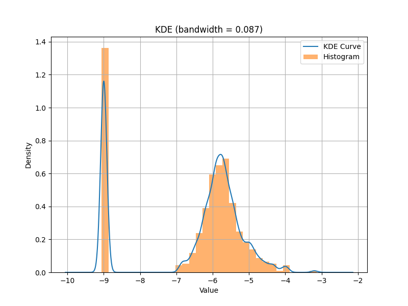
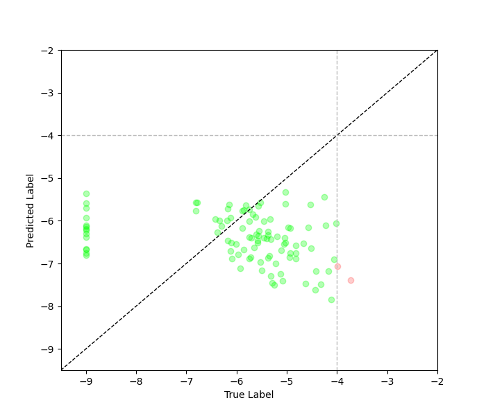

Regular Regression with Autoencoder on SDOBenchmark#
Necessary Files#
All the source code in this tutorial can be found at
imbal/tutorials/SDO/AE/sdo_regression_regular_fit.pyThe training data for this tutorial can be found at
imbal/tutorials/data/SDOBenchmark/trainingThe test data for this tutorial can be found at
imbal/tutorials/data/SDOBenchmark/test
1. Import Packages#
The following lines of code are used simply to import the packages that are required for the entirety of this tutorial. It should not generate any output, besides some potential warning messages from TensorFlow.
"""
Import packages
"""
import keras.metrics
import imbal
import os
import numpy as np
import matplotlib.pyplot as plt
from PIL import Image
from keras import layers, optimizers
2. Load Data#
"""
Load data
"""
SDO_DATA_PATH = '../../data/SDOBenchmark' # Ensure data is located at this path
def load_sdo_data(data_path):
# Load labels (log peak flux)
with open(os.path.join(data_path, 'log_peak_flux.txt'), 'r') as file:
contents = file.read().strip()
loaded_data_fluxes = np.array([float(x) for x in contents.split('\n')])
# Load images (10 images per sample, 256x256 per image)
loaded_images = np.zeros((len(loaded_data_fluxes), 256, 256, 10), dtype=np.float32)
for i in range(len(loaded_data_fluxes)):
print(f'Loading SDO samples [{i+1}/{len(loaded_data_fluxes)}]', end='\r')
image_list = [Image.open(os.path.join(data_path, f'sdo_subset_sample_{i}_image_{x}.jpg')).convert('L') for x in range(10)]
stacked_images = np.stack(image_list, axis=-1) # Images stacked along channels
loaded_images[i] = stacked_images / 255.0 # Normalize black and white pixel values from 0 to 1
print(f'\n{len(loaded_data_fluxes)} data samples loaded successfully')
return loaded_images, loaded_data_fluxes
# Load train and test data via function defined above
x_train, y_train = load_sdo_data(os.path.join(SDO_DATA_PATH, 'training'))
x_test, y_test = load_sdo_data(os.path.join(SDO_DATA_PATH, 'test'))
print(
f'Loaded data with the following shapes:\n'
f'\tx_train: {x_train.shape}\n'
f'\ty_train: {y_train.shape}\n'
f'\tx_test: {x_test.shape}\n'
f'\ty_test {y_test.shape}'
)
The above code should generate an output similar to the following. The output below is the result of loading the first 50 samples from the training and test sets.
Loading SDO samples [500/500]
500 data samples loaded successfully
Loading SDO samples [100/100]
100 data samples loaded successfully
Loaded data with the following shapes:
x_train: (500, 256, 256, 10)
y_train: (500,)
x_test: (100, 256, 256, 10)
y_test (100,)
3. Build the Model#
The following code builds a model using Keras layers. Note this is the first
time in this tutorial that the imbal package is being used, as where you
might normally instance a keras.Model object, we instead instance a
imbal.regression.Model object.
"""
Build model
"""
def build_simple_cnn():
input_layer = layers.Input((256, 256, 10))
x = layers.Conv2D(8, 3, activation='relu', padding='same')(input_layer)
x = layers.Conv2D(8, 3, activation='relu', padding='same', strides=(2, 2))(x)
x = layers.Conv2D(16, 3, activation='relu', padding='same')(x)
x = layers.Conv2D(16, 3, activation='relu', padding='same', strides=(2, 2))(x)
x = layers.Conv2D(32, 3, activation='relu', padding='same')(x)
x = layers.Conv2D(32, 3, activation='relu', padding='same', strides=(2, 2))(x)
x = layers.Dense(32, activation='relu')(x)
x = layers.Flatten()(x)
output_layer = layers.Dense(1)(x)
model = imbal.regression.Model(inputs=input_layer, outputs=output_layer)
model.summary()
return model
model = build_simple_cnn()
The above code should produce the following output:
Model: "model"
┏━━━━━━━━━━━━━━━━━━━━━━━━━━━━━━━━━┳━━━━━━━━━━━━━━━━━━━━━━━━┳━━━━━━━━━━━━━━━┓
┃ Layer (type) ┃ Output Shape ┃ Param # ┃
┡━━━━━━━━━━━━━━━━━━━━━━━━━━━━━━━━━╇━━━━━━━━━━━━━━━━━━━━━━━━╇━━━━━━━━━━━━━━━┩
│ input_layer (InputLayer) │ (None, 256, 256, 10) │ 0 │
├─────────────────────────────────┼────────────────────────┼───────────────┤
│ conv2d (Conv2D) │ (None, 256, 256, 8) │ 728 │
├─────────────────────────────────┼────────────────────────┼───────────────┤
│ conv2d_1 (Conv2D) │ (None, 128, 128, 8) │ 584 │
├─────────────────────────────────┼────────────────────────┼───────────────┤
│ conv2d_2 (Conv2D) │ (None, 128, 128, 16) │ 1,168 │
├─────────────────────────────────┼────────────────────────┼───────────────┤
│ conv2d_3 (Conv2D) │ (None, 64, 64, 16) │ 2,320 │
├─────────────────────────────────┼────────────────────────┼───────────────┤
│ conv2d_4 (Conv2D) │ (None, 64, 64, 32) │ 4,640 │
├─────────────────────────────────┼────────────────────────┼───────────────┤
│ conv2d_5 (Conv2D) │ (None, 32, 32, 32) │ 9,248 │
├─────────────────────────────────┼────────────────────────┼───────────────┤
│ dense (Dense) │ (None, 32, 32, 32) │ 1,056 │
├─────────────────────────────────┼────────────────────────┼───────────────┤
│ flatten (Flatten) │ (None, 32768) │ 0 │
├─────────────────────────────────┼────────────────────────┼───────────────┤
│ dense_1 (Dense) │ (None, 1) │ 32,769 │
└─────────────────────────────────┴────────────────────────┴───────────────┘
Total params: 52,513 (205.13 KB)
Trainable params: 52,513 (205.13 KB)
Non-trainable params: 0 (0.00 B)
4. Model Compilation and Training#
The code below compiles the model is a manner identical to the keras.Model
object, then performs a model fit on the training data. Notably, during
compilation, the model takes an extra parameter generate_decoder_branch
which enables decoder branch generation, and during fitting, the
imbal.regression.Model object can take an extra parameter called stratify_batches,
which ensures that rarer samples are present in each batch during training.
"""
Compile and train model
"""
LEARNING_RATE = 5e-5
EPOCHS = 20
BATCH_SIZE = 64
model.compile(
optimizer=optimizers.Adam(learning_rate=LEARNING_RATE),
loss='mse',
metrics=['mae'],
generate_decoder_branch=True
)
model.fit(
x_train,
y_train,
epochs=EPOCHS,
batch_size=BATCH_SIZE,
stratify_batches=True # Ensure all batches have a similar data distribution
)
model.evaluate(x_test, y_test)
The above code should produce the standard TensorFlow output for model training and evaluation.
5. Probability Density Distribution and Results Visualization#
The following code plots a fitted KDE distribution for the training data over a histogram of the training data, along with a plot comparing the true and predicted values for individual test samples.
"""
Data and results visualization
"""
KDE_BIN_COUNT=32
train_rare_mask = y_train > -4
test_rare_mask = y_test > -4
train_frequent_mask = ~train_rare_mask
test_frequent_mask = ~test_rare_mask
print('Number of frequent training samples:', np.sum(train_frequent_mask.astype(np.int32)))
print('Number of rare training samples:', np.sum(train_rare_mask.astype(np.int32)))
print('Number of frequent test samples:', np.sum(test_frequent_mask.astype(np.int32)))
print('Number of rare test samples:', np.sum(test_rare_mask.astype(np.int32)))
# Predict on training data
train_predictions = []
for i in range(0, len(x_train), BATCH_SIZE):
batch = x_train[i:i+BATCH_SIZE]
train_predictions.append(model.predict(batch))
train_predictions = np.concatenate(train_predictions, axis=0)
# Predict on test data
test_predictions = []
for i in range(0, len(x_test), BATCH_SIZE):
batch = x_test[i:i+BATCH_SIZE]
test_predictions.append(model.predict(batch))
test_predictions = np.concatenate(test_predictions, axis=0)
train_predictions_rare = train_predictions[train_rare_mask] # Mask rare training data
train_labels_rare = y_train[train_rare_mask] # Mask predictions on rare training data
test_predictions_rare = test_predictions[test_rare_mask] # Mask rare test data
test_labels_rare = y_test[test_rare_mask] # Mask predictions on rare test data
train_predictions_frequent = train_predictions[train_frequent_mask] # Mask frequent training data
train_labels_frequent = y_train[train_frequent_mask] # Mask predictions on frequent training data
test_predictions_frequent = test_predictions[test_frequent_mask] # Mask frequent test data
test_labels_frequent = y_test[test_frequent_mask] # Mask predictions on frequent test data
# Calculate metrics
overall_train_mae = np.mean(np.abs(train_predictions - y_train))
frequent_train_mae = np.mean(np.abs(train_predictions_frequent - train_labels_frequent))
rare_train_mae = np.mean(np.abs(train_predictions_rare - train_labels_rare))
overall_test_mae = np.mean(np.abs(test_predictions - y_test))
frequent_test_mae = np.mean(np.abs(test_predictions_frequent - test_labels_frequent))
rare_test_mae = np.mean(np.abs(test_predictions_rare - test_labels_rare))
print(
f'Overall train MAE: {overall_train_mae:.3f}\n'
f'Frequent train MAE: {frequent_train_mae:.3f}\n'
f'Rare train MAE: {rare_train_mae:.3f}\n'
f'Overall test MAE: {overall_test_mae:.3f}\n'
f'Frequent test MAE: {frequent_test_mae:.3f}\n'
f'Rare test MAE: {rare_test_mae:.3f}'
)
data_kde_bandwidth = imbal.regression.fit_kde(y_train, bin_count=KDE_BIN_COUNT)
imbal.regression.plot_kde_1d(
y_train,
data_kde_bandwidth,
bin_count=KDE_BIN_COUNT,
show_bin_count=False,
save_figure='sample-sdo-regular-fit-ae-data-distribution.png'
)
def plot_true_vs_predictions(
labels,
predictions,
rare_threshold=-4,
low_bound=-9.5,
high_bound=-2,
save_figure=None
):
labels = labels.reshape(-1)
predictions = predictions.reshape(-1)
# Mask rare and frequent data
rare_mask = labels > rare_threshold
frequent_mask = ~rare_mask
frequent_labels = labels[frequent_mask]
frequent_predictions = predictions[frequent_mask]
rare_labels = labels[rare_mask]
rare_predictions = predictions[rare_mask]
# Create comparison plot
plt.figure(figsize=(7, 6))
plt.plot([low_bound, high_bound], [low_bound, high_bound], linestyle="--", linewidth=1, color='black', label="Perfect Prediction")
light_gray = '#BBBBBB'
plt.plot([rare_threshold, rare_threshold], [low_bound, high_bound], linestyle="--", linewidth=1, color=light_gray)
plt.plot([low_bound, high_bound], [rare_threshold, rare_threshold], linestyle="--", linewidth=1, color=light_gray)
plt.scatter(frequent_labels, frequent_predictions, color="#00FF00", alpha=0.3)
plt.scatter(rare_labels, rare_predictions, color="#FF0000", alpha=0.2)
plt.xlabel("True Label")
plt.ylabel("Predicted Label")
plt.xlim(low_bound, high_bound)
plt.ylim(low_bound, high_bound)
# Save plot if path is specified
if save_figure is not None:
plt.savefig(save_figure)
plt.show()
plot_true_vs_predictions(
y_test,
test_predictions,
save_figure='sample-sdo-regular-fit-ae-label-vs-prediction-plot.png'
)
Below are examples of what the generated output and plots should look like for the above code.
Number of frequent training samples: 496
Number of rare training samples: 4
Number of frequent test samples: 98
Number of rare test samples: 2
Overall train MAE: 1.350
Frequent train MAE: 1.337
Rare train MAE: 3.460
Overall test MAE: 1.486
Frequent test MAE: 1.448
Rare test MAE: 3.807

